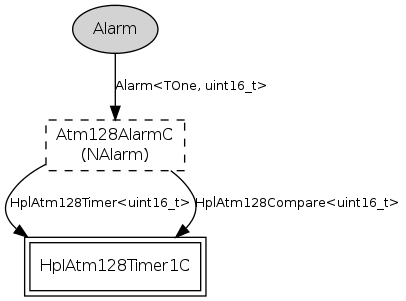

16-bit 32kHz Alarm component as per TEP102 HAL guidelines. The mica family 32kHz Alarm is built on hardware timer 1, and actually runs at CPU frequency / 256. You can use the MeasureClockC.cyclesPerJiffy() command to figure out the exact frequency.
Assumes an ~8MHz CPU clock, replace this component if you are running at a radically different frequency.
Upto three of these alarms can be created (one per hardware compare register).
